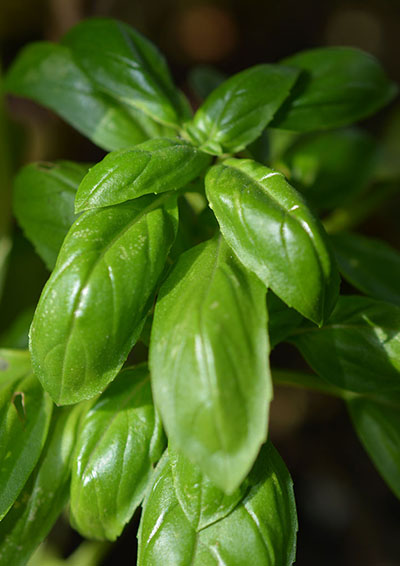

Sød, storbladet basilikum
Ocimum Basilicum
Type: Basilikum
Højde: 45 cm
Såafstand: 20 cm
Rækkeafstand: 30 cm
Sådybde: 1 cm
Lysforhold: Sol
Forspiring: Marts April Maj Juni
Udplantning/såning på friland: Maj Juni Juli
Spiring efter: ca. 20 dage
Moden til høst efter: ca. 60 dage
Beskrivelse:
Der er over 60 basilikumsorter, og storbladet, sød basilikum - også kendt som klassisk, italiensk basilikum, er den mest almindelig solgte basilikum med ovale grønne blade og hvide blomster. Den har en kraftig aromatisk, let pebret smag med et strejf af mynte og nellike. Du kan bruge bladene både friske og tørrede, og smagen er helt perfekt sammen med tomater eller i en lækker hjemmelavet pesto. Basilikum kan med fordel plantes i drivhuset, da den tiltrækker bier og afskrækker fluer.